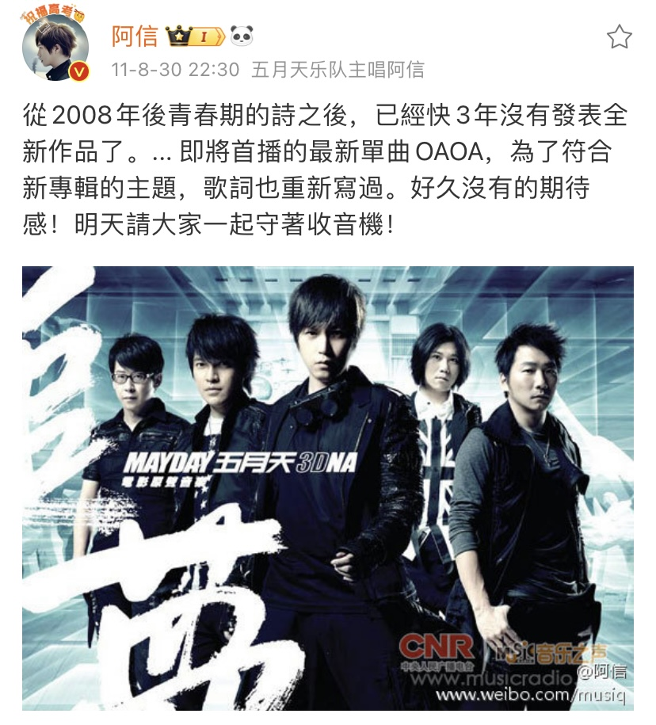
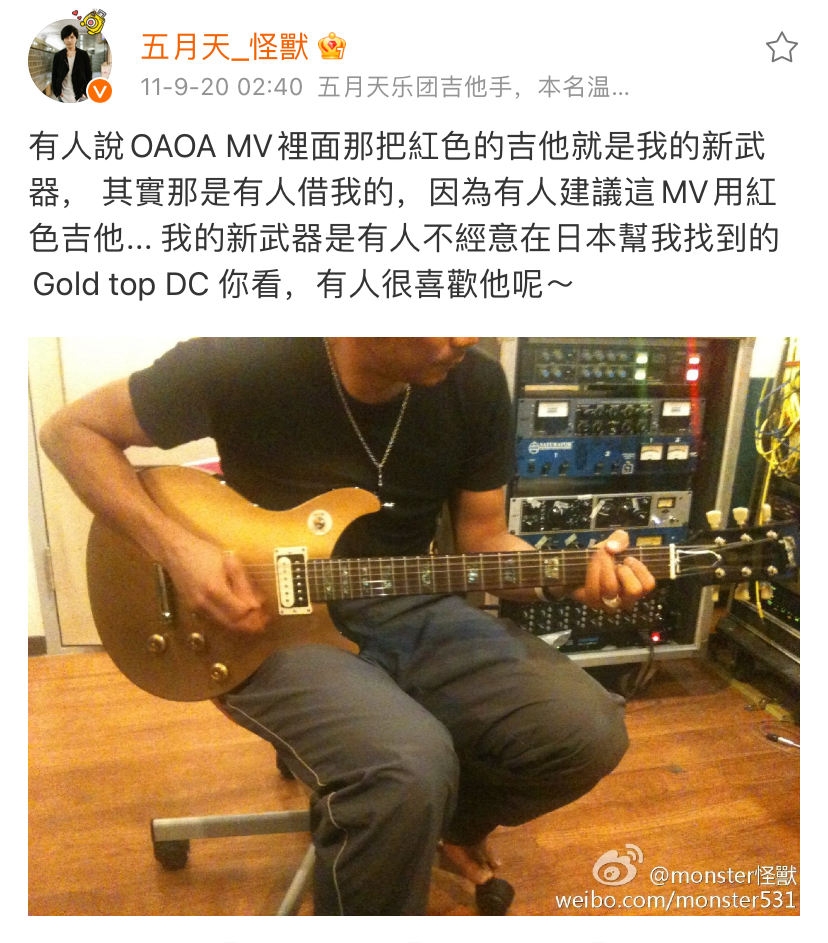

來了，新作。
原來是3D電影追夢的主題曲，所以內容比較有關「演唱會」，
後來五個人一致決定把這首歌收錄進大碟中。
為了符合新專輯的主題[______]（不要猜），於是重新寫了專輯版的歌詞，
新的歌詞更直覺，也更挑戰我們長久依賴的某些糖衣，我自己很喜歡這個歌詞呢。
後青春期之後，更容易瞻前顧後，我和我同輩的同學朋友，都不約而同的點頭了。
「嗯。」
好想找回一些什麼。
那些已經很模糊的氣味，很久遠的回憶，很莽撞的直覺，很無畏的歲月......。
無論如何，我再次告訴自己，相信當下，不要為了害怕，而留下無法更改的未來，
每個現在，都會是值得回憶的永遠。
OAOA是嬰兒的啼哭，是摩天輪的樣子，是太陽與山脈的形狀，是對著空谷的吶喊，
是沒有語言的希望，是在風裡面寫下此刻自己的呼喊......。
你的OAOA和我不同，但我們還是可以唱同一首OAOA。
「現在就是永遠。」
阿信的博客
OAOA，現在就是永遠
阿信 2011-08-31 10:03:12
photo by ashin
歌曲信息
OAOA（現在就是永遠） （詞曲:阿信）
我相信 苦澀的眼淚
我不信 甜美的誓言
我相信 音樂就該音樂
我相信 愛情的純粹
我不信 華麗的詩篇
我相信 熱烈的爭辯
我不信 無聲的和諧
我相信 秒秒的瞬間
我不信 年年的永遠
我相信 搖滾就能萬歲
快張開你的嘴 OA OA
再不管你是誰 OA OA
人生都太短暫
別想 別怕 別後退
現在 就是 永遠
出生的那一年 OA OA
轉眼就這一天 OA OA
人生都太短暫
去瘋 去愛 去浪費
和我 再唱 OA OA OA
OAOA
OAOA（丟掉名字性別） （詞曲:阿信）
舔一下 飢渴的味蕾
跳一下 期盼的腳尖
恨一種 無止盡的和諧
等一個 復活的瞬間
喝一滴 甜美的眼淚
唱一首 透明搖滾樂
創一個 顛峰的瘋癲
這一生 太多的妥協
這一刻 徹底的打碎
這一次 丟掉名字性別
快張開你的嘴 OA OA
再不管你是誰 OA OA
人生都太短暫
別想 別怕 別後退
現在 就是 永遠
出生的那一年 OA OA
轉眼就這一天 OA OA
人生都太短暫
去瘋 去愛 去浪費
和我 再唱 OA OA OA
OAOA
OAOA mv
微博互動
阔别三年的单曲
怪兽的新武器
--未完待續--